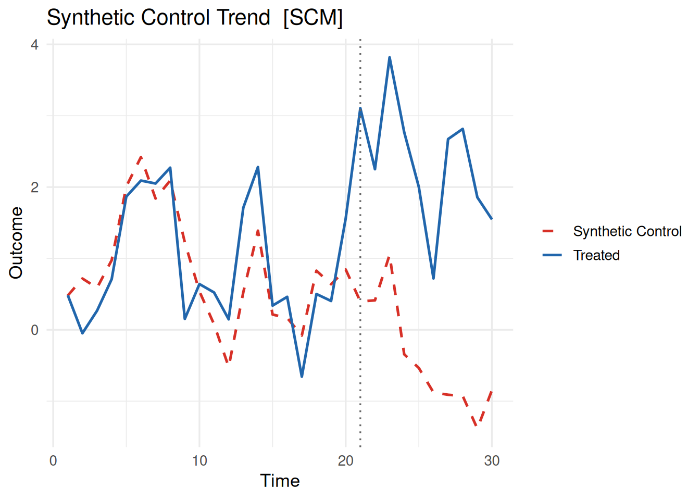
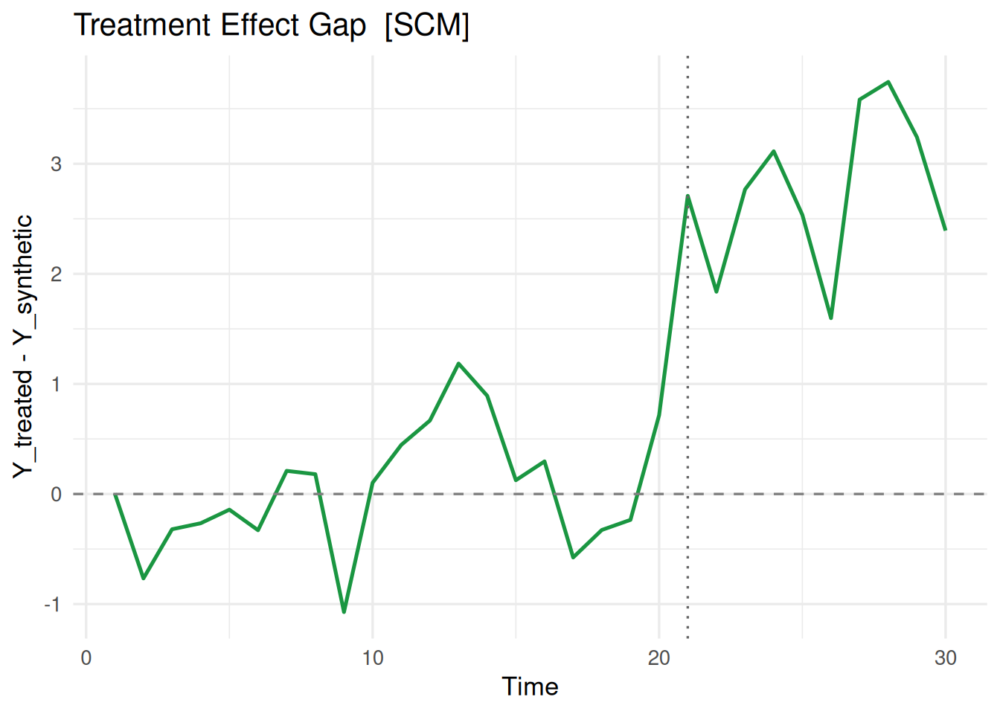
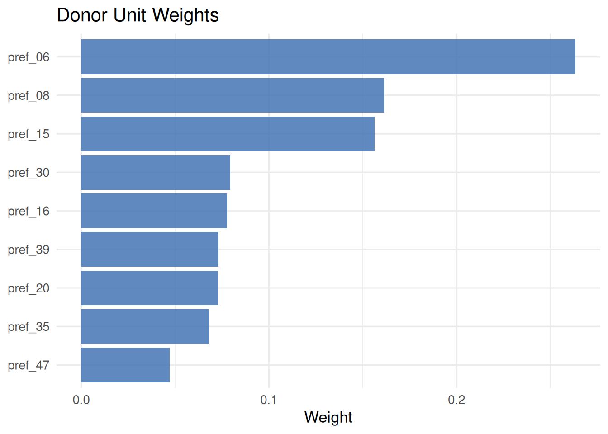
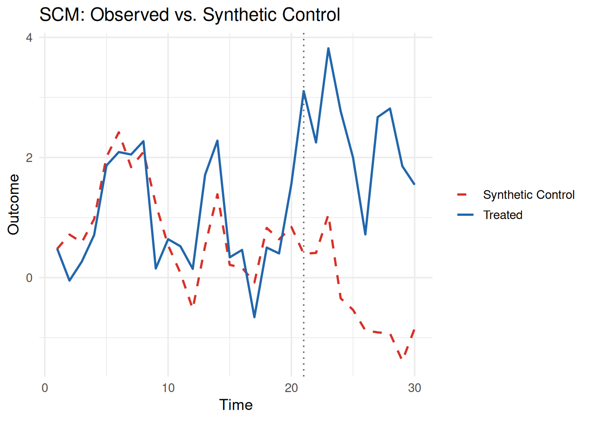

library(coresynth)


はじめに
本ページでは、合成コントロール法（SCM）とその関連手法を統一インターフェースで提供するパッケージ、coresynthについて説明します。
coresynthの最大の特徴はパフォーマンスです。計算上のボトルネックをすべてC++（RcppArmadillo）で実装しており、純Rの代替実装と比べて最大約56倍の高速化を実現しています。
バージョン0.2ではConformal推論（conformal_inference()）が追加されました。Chernozhukov et al. (2021) のPHT (Moving-Block Permutation)に基づく置換p値と信頼区間を、scm/sdid/gsc/mc/siの全推定量に対して利用できます。
Noteご意見待ってます
実装・挙動に関するフィードバックや機能リクエストは、ページ下のコメントかGitHubのIssuesまでお寄せください。
coresynthが対応する推定量は以下の6つです。
| 推定量 | method |
参考文献 |
|---|---|---|
| Synthetic Control Method | "scm" |
Abadie et al. (2010) |
| Synthetic Difference-in-Differences | "sdid" |
Arkhangelsky et al. (2021) |
| Generalised Synthetic Control | "gsc" |
Xu (2017) |
| Matrix Completion | "mc" |
Athey et al. (2021) |
| Time-Aware Synthetic Control | "tasc" |
Rho et al. (2026) |
| Synthetic Interventions | "si" |
Agarwal et al. (2024) |
また、各推定量に対して複数の推論手法が利用できます。
| 推論手法 | 対応推定量 | 関数 |
|---|---|---|
| MSPE比率置換検定 | scm |
mspe_ratio_pval() |
| プラセボ / Bootstrap / Jackknife | sdid |
sdid_inference() |
| パラメトリックBootstrap | gsc |
gsc_boot() |
| ノンパラメトリックBootstrap / Jackknife | gsc |
gsc_inference() |
| Bootstrap / Jackknife | si |
si_inference() |
| Conformal推論（CWZ 2021） | scm, sdid, gsc, mc, si |
conformal_inference() |
インストール
GitHubからインストールできます（WindowsはRtools、macOSはXcodeが必要です）。
# pak を使う場合
pak::pak("yo5uke/coresynth")
# devtools を使う場合
devtools::install_github("yo5uke/coresynth")準備
パッケージを読み込みます。
本ページで使用するデータを生成します。47都道府県に相当するバランスパネル（ユニット数47、期間数30、真のATT = 2.5）を3因子モデルで生成します。
set.seed(2024)
N <- 47 # ユニット数（都道府県数相当）
TT <- 30 # 期間数（年）
T_pre <- 20 # 処置前期間
r <- 3 # 潜在因子数
# 3因子モデルによるパネル生成
F_t <- matrix(0, TT, r)
for (j in seq_len(r)) {
F_t[, j] <- cumsum(rnorm(TT, 0, 0.4))
}
L_i <- matrix(abs(rnorm(N * r, 1, 0.3)), N, r)
Y <- L_i %*% t(F_t) + matrix(rnorm(N * TT, 0, 0.5), N, TT)
dat <- expand.grid(
time = seq_len(TT),
id = paste0("pref_", sprintf("%02d", seq_len(N)))
)
dat <- dat[order(dat$id, dat$time), ]
true_att <- 2.5
dat$y <- as.vector(t(Y))
dat$d <- as.integer(dat$id == "pref_01" & dat$time > T_pre)
dat$y[dat$d == 1] <- dat$y[dat$d == 1] + true_att # 真のATT = 2.5idがユニット識別変数（pref_01〜pref_47）、timeが時間変数（1〜30）、yが結果変数、dが処置変数（処置ユニットpref_01が21期目以降に処置）です。pref_01以外の46ユニットがドナープールとなります。
scm_fit()
scm_fit()はすべての手法への統一エントリーポイントです。フォーミュラは 結果変数 ~ 処置変数 | ユニットID + 時間ID の形式で指定します。
scm_fit(
formula,
data,
method = c("scm", "sdid", "gsc", "mc", "tasc", "si"),
predictors = NULL,
covariates = NULL,
v_selection = c("insample", "oos"),
donor_mspe_threshold = Inf,
lambda_pen = NULL,
v_optim = c("coord_descent", "auto", "bfgs"),
...
)| 引数 | 説明 |
|---|---|
formula |
y ~ d | unit + time 形式のFormulaオブジェクト |
data |
ロング形式のデータフレーム（1行 = 1ユニット×1時点） |
method |
推定手法の選択（"scm", "sdid", "gsc", "mc", "tasc", "si"） |
predictors |
SCM用の予測変数リスト（pred()で指定）。NULLの場合は処置前期間の全結果変数期間を使用 |
covariates |
時変共変量の列名（"sdid", "scm", "gsc"でサポート） |
v_selection |
SCM用のV行列選択方法。"insample"（デフォルト）または Abadie (2021) の"oos" |
donor_mspe_threshold |
ドナープール絞り込みの閾値（SCMのみ。デフォルトInfで無効） |
lambda_pen |
ペナルティSCMのペナルティパラメータ（SCMのみ。NULLで通常SCM、"auto"で自動選択） |
v_optim |
V外部最適化の手法。"coord_descent"（デフォルト）、"bfgs"、"auto" |
すべての手法は c("coresynth_<method>", "coresynth") クラスのオブジェクトを返します。共通フィールドは以下の通りです。
method：推定量名estimate：ATT推定値times：時間インデックスベクトルT_pre：処置前期間数Y_treat：処置ユニットの結果系列gap：処置効果系列（\(Y_{\text{treat}} - Y_{\text{synthetic}}\)）
SCM（method = "scm"）
fit_scm <- scm_fit(y ~ d | id + time, data = dat, method = "scm")
print(fit_scm)=== coresynth fit ===
Method : SCM
Estimate (ATT): 2.7521
Pre-treatment periods: 20 summary(fit_scm)=== coresynth summary ===
Method : SCM
Periods : T_pre = 20 | T_post = 10
ATT estimate: 2.752104
Unit weights (non-zero donors):
pref_06 pref_08 pref_15 pref_16 pref_20 pref_30 pref_35 pref_39 pref_47
0.2634 0.1615 0.1564 0.0778 0.0729 0.0794 0.0681 0.0732 0.0472 予測変数の指定（pred()）
SCMは pred() 関数を使って Abadie et al. (2010) §2.3の予測変数行列を指定できます。
# dat に income, unemp 列がある想定の例
fit_scm_cov <- scm_fit(
y ~ d | id + time,
data = dat,
method = "scm",
predictors = list(
pred(c("income", "unemp"), 1:8), # 1〜8期平均
pred("y", 5), # 5期の結果変数
pred("y", 1:4, op = "mean") # 1〜4期の平均
)
)pred() の op 引数には "mean"（デフォルト）、"median"、"sum" が指定できます。
SDID（method = "sdid"）
fit_sdid <- scm_fit(y ~ d | id + time, data = dat, method = "sdid")
print(fit_sdid)=== coresynth fit ===
Method : SDID
Estimate (ATT): 2.5266
Pre-treatment periods: 20 GSC（method = "gsc"）
fit_gsc <- scm_fit(y ~ d | id + time, data = dat, method = "gsc")
print(fit_gsc)=== coresynth fit ===
Method : GSC
Estimate (ATT): 2.5552
Pre-treatment periods: 20 GSCは時変共変量の調整を covariates 引数でサポートしています（dataの列名を文字ベクトルで指定）。内部では Xu (2017) の完全EMアルゴリズム（E-step：因子モデルのSVD、M-step：残差への共変量OLS）を実行します。
MC（method = "mc"）
fit_mc <- scm_fit(y ~ d | id + time, data = dat, method = "mc")
print(fit_mc)=== coresynth fit ===
Method : MC
Estimate (ATT): 2.5198
Pre-treatment periods: 20 核ノルム正則化による行列補完（Soft-Impute）で反事実を推定します。
TASC（method = "tasc"）
fit_tasc <- scm_fit(y ~ d | id + time, data = dat, method = "tasc")
print(fit_tasc)=== coresynth fit ===
Method : TASC
Estimate (ATT): 2.1725
Pre-treatment periods: 20 カルマンEMによる時間考慮型合成コントロール (Rho et al. 2026) です。
SI（method = "si"）
fit_si <- scm_fit(y ~ d | id + time, data = dat, method = "si")
print(fit_si)=== coresynth fit ===
Method : SI
Estimate (ATT): 2.6972
Pre-treatment periods: 20 SI-PCR（主成分回帰）に基づく合成介入法 (Agarwal et al. 2024) です。シャープ・Staggered・マルチアームすべてに対応しています。
6手法の比較
methods <- c("scm", "sdid", "gsc", "mc", "tasc", "si")
fits <- lapply(methods, \(m) scm_fit(y ~ d | id + time, data = dat, method = m))
names(fits) <- methods
data.frame(
method = methods,
estimate = round(sapply(fits, `[[`, "estimate"), 3)
) method estimate
scm scm 2.752
sdid sdid 2.527
gsc gsc 2.555
mc mc 2.520
tasc tasc 2.172
si si 2.697真のATTは2.5です。
Staggered Adoption
6つの手法すべてがStaggered Adoptionに対応しています。各コホートを個別に推定し、\(N_{\text{treated}} \times T_{\text{post}}\) に比例したウェイトでATTを集計するアプローチ (Clarke et al. 2024) を採用しています。
# pref_01: 21期から処置、pref_02: 26期から処置
dat_s <- dat
dat_s$d <- 0L
dat_s$d[dat_s$id == "pref_01" & dat_s$time > 20] <- 1L
dat_s$d[dat_s$id == "pref_02" & dat_s$time > 25] <- 1L
dat_s$y[dat_s$d == 1] <- dat_s$y[dat_s$d == 1] + 2.5
fit_sdid_s <- scm_fit(y ~ d | id + time, data = dat_s, method = "sdid")
print(fit_sdid_s)=== coresynth fit ===
Method : SDID
Estimate (ATT): 4.1633
Pre-treatment periods: 20 コホート別の推定値は $cohort_estimates フィールドで確認できます。
fit_sdid_s$cohort_estimates cohort n_treated T_pre T_post estimate weight
1 21 1 20 10 4.864657 0.6666667
2 26 1 25 5 2.760581 0.3333333control_group 引数でドナープールを制御できます。
"clean"（デフォルト）：never-treated + future adoptersをドナーとして使用 (Clarke et al. 2024)"never_treated"：never-treatedのみを使用
fit_sdid_never <- scm_fit(
y ~ d | id + time,
data = dat_s,
method = "sdid",
control_group = "never_treated"
)plot()
plot() で3種類のプロットを出力できます。
plot(fit, type = c("trend", "gap", "weights"))"trend"：処置ユニット vs. 合成コントロールの時系列"gap"：処置効果の時系列（\(Y_{\text{treated}} - Y_{\text{synthetic}}\)）"weights"：ドナーユニットのウェイト棒グラフ（SCM・SDID・SI）
Trend プロット
plot(fit_scm, type = "trend")
plot(fit_sdid, type = "trend")
plot(fit_gsc, type = "trend")Gap プロット
plot(fit_scm, type = "gap")
垂直の点線が処置開始時点、水平の破線が0です。
Weights プロット
plot(fit_scm, type = "weights")
ggplot2ベースなのでggplotの関数をつなげることも可能です。
library(ggplot2)
plot(fit_scm, type = "trend") +
labs(title = "SCM: Observed vs. Synthetic Control")
推論
各推定量に対応した推論関数が用意されています。
SCM：MSPE比率置換検定（mspe_ratio_pval()）
Abadie et al. (2010) / Abadie (2021) のMSPE比率に基づく置換検定です。各ドナーを処置ユニットとして扱ったプラセボSCMを推定します。
inf_scm <- mspe_ratio_pval(fit_scm)
inf_scm$p_value[1] 0.0212766mspe_ratio_pval(
fit,
mspe_threshold = 0, # プラセボに含める最小MSPE（デフォルト：0）
max_iter = 100L,
tol = 1e-4,
use_covariates = FALSE, # 予測変数をプラセボにも適用するか
alternative = c("two.sided", "greater", "less")
)SDID：sdid_inference()
Clarke et al. (2024) に基づく3種類の推論手法を提供します。
# プラセボ検定（デフォルト）
inf_sdid <- sdid_inference(fit_sdid, method = "placebo")
inf_sdid$p_value[1] 0.0212766# ブートストラップ（SE・CI付き）
inf_sdid_boot <- sdid_inference(
fit_sdid,
method = "bootstrap",
n_boot = 200,
seed = 42
)
inf_sdid_boot$se[1] 0.1812056inf_sdid_boot$ci_lower[1] 2.192366inf_sdid_boot$ci_upper[1] 2.972953sdid_inference(
fit,
method = c("placebo", "bootstrap", "jackknife", "jackknife_global"),
n_boot = 200L, # bootstrap のみ
level = 0.95,
alternative = c("two.sided", "greater", "less"),
seed = NULL
)GSC：gsc_boot()
Xu (2017) §3のパラメトリックBootstrapです。推定された因子モデルから帰無仮説下の分布を生成します。
inf_gsc <- gsc_boot(fit_gsc, B = 499, seed = 42)
inf_gsc$p_value[1] 0inf_gsc$ci_lower[1] -0.5585225inf_gsc$ci_upper[1] 0.5787406gsc_boot(
fit,
B = 499L,
alpha = 0.05,
seed = NULL
)SI：si_inference()
Agarwal et al. (2024) のノンパラメトリックBootstrap / Jackknife推論です。Staggeredフィットにも対応しています。
inf_si <- si_inference(fit_si, method = "bootstrap", n_boot = 499, seed = 42)
inf_si$p_value[1] 4.194905e-223si_inference(
fit,
method = c("bootstrap", "jackknife", "jackknife_global"),
n_boot = 499L,
level = 0.95,
alternative = c("two.sided", "greater", "less"),
seed = NULL
)Conformal推論：conformal_inference()
Chernozhukov et al. (2021) の手法です。Moving-Block置換を用いた置換p値と信頼区間を返します。scm/sdid/gsc/mc/siのシャープフィットに対応しています。
inf_conf <- conformal_inference(fit_scm, level = 0.95)
inf_conf$p_value[1] 0.03333333inf_conf$ci_lower[1] 1.211775inf_conf$ci_upper[1] 5.46472# SDIDでも同様に使える
inf_conf_sdid <- conformal_inference(fit_sdid, level = 0.95)
inf_conf_sdid$p_value[1] 0.06666667conformal_inference(
fit,
tau0 = 0, # 帰無仮説のATT（デフォルト：0）
q = 1, # S_q統計量の指数（デフォルト：1）
alternative = c("two.sided", "greater", "less"),
ci = TRUE,
level = 0.95,
grid = NULL, # 候補値ベクトル（NULLの場合は自動設定）
n_grid = 200L,
grid_mult = 4
)| 引数 | 説明 |
|---|---|
fit |
scm_fit()の結果（scm/sdid/gsc/mc/si、シャープフィット） |
tau0 |
報告するp値の帰無ATT（デフォルト：0） |
q |
\(S_q = (T_{\text{post}}^{-1}\sum\lvert u_t\rvert^q)^{1/q}\) の指数。2値フィットでのみ有効 |
alternative |
対立仮説の方向 |
ci |
信頼区間を構築するか（デフォルト：TRUE） |
level |
信頼水準（デフォルト：0.95） |
grid |
検定反転の候補\(\tau_0\)ベクトル。NULLの場合は自動設定 |
n_grid |
グリッド点数（デフォルト：200） |
grid_mult |
グリッド半幅の乗数（デフォルト：4） |
broom・modelsummaryとの連携
推論結果はbroomと互換性があります。
broom::tidy(inf_conf)
broom::glance(inf_conf)JSON出力（export_json()）
再現性ワークフロー向けに、推定結果をJSONとして出力できます。
export_json(fit_scm, file = "scm_results.json")
# 推論結果も含める場合
export_json(fit_scm, file = "scm_results.json", inference = inf_scm)file = NULL を指定するとファイルには書き出さず、Rリストを invisibly に返します。
おわりに
coresynthは6つの合成コントロール関連手法を統一インターフェースで提供し、C++実装による高速化を実現しています。現時点では開発版のみで、フィードバックを積極的に受け付けています。
もし使っていただいて「使いにくい」や「こんな機能が欲しい」等ありましたら、以下のコメントやGitHubのIssuesまでお願いします。
参考文献
Abadie, Alberto. 2021. "Using Synthetic Controls: Feasibility, Data Requirements, and Methodological Aspects". Journal of Economic Literature 59 (2): 391–425. https://doi.org/10.1257/jel.20191450.
Abadie, Alberto, Alexis Diamond, and Jens Hainmueller. 2010. "Synthetic Control Methods for Comparative Case Studies: Estimating the Effect of California’s Tobacco Control Program". Journal of the American Statistical Association 105 (490): 493–505. https://doi.org/10.1198/jasa.2009.ap08746.
Agarwal, Anish, Devavrat Shah, and Dennis Shen. 2024. "Synthetic Interventions". https://doi.org/10.48550/arXiv.2006.07691.
Arkhangelsky, Dmitry, Susan Athey, David A. Hirshberg, Guido W. Imbens, and Stefan Wager. 2021. "Synthetic Difference-in-Differences". American Economic Review 111 (12): 4088–118. https://doi.org/10.1257/aer.20190159.
Athey, Susan, Mohsen Bayati, Nikolay Doudchenko, Guido Imbens, and Khashayar Khosravi. 2021. "Matrix Completion Methods for Causal Panel Data Models". Journal of the American Statistical Association 116 (536): 1716–30. https://doi.org/10.1080/01621459.2021.1891924.
Chernozhukov, Victor, Kaspar Wüthrich, and Yinchu Zhu. 2021. "An Exact and Robust Conformal Inference Method for Counterfactual and Synthetic Controls". Journal of the American Statistical Association 116 (536): 1849–64. https://doi.org/10.1080/01621459.2021.1920957.
Clarke, Damian, Daniel Pailañir, Susan Athey, and Guido Imbens. 2024. "On synthetic difference-in-differences and related estimation methods in Stata". The Stata Journal 24 (4): 557–98. https://doi.org/10.1177/1536867X241297914.
Rho, Saeyoung, Cyrus Illick, Samhitha Narasipura, Alberto Abadie, Daniel Hsu, and Vishal Misra. 2026. "Time-Aware Synthetic Control". https://doi.org/10.48550/arXiv.2601.03099.
Xu, Yiqing. 2017. "Generalized Synthetic Control Method: Causal Inference with Interactive Fixed Effects Models". Political Analysis 25 (1): 57–76. https://doi.org/10.1017/pan.2016.2.